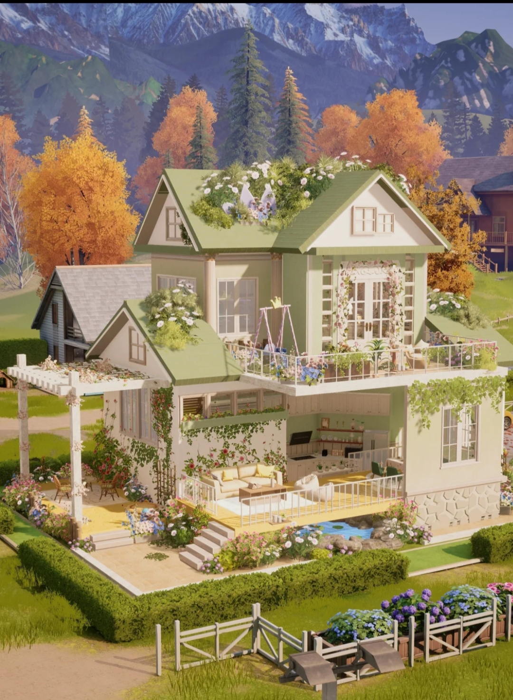
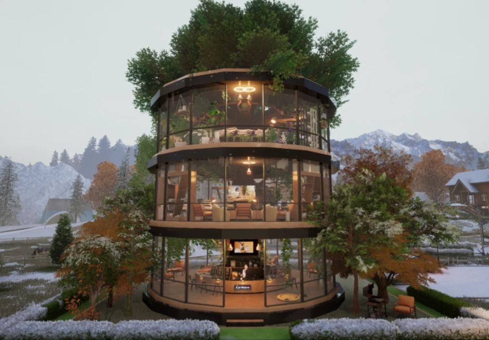
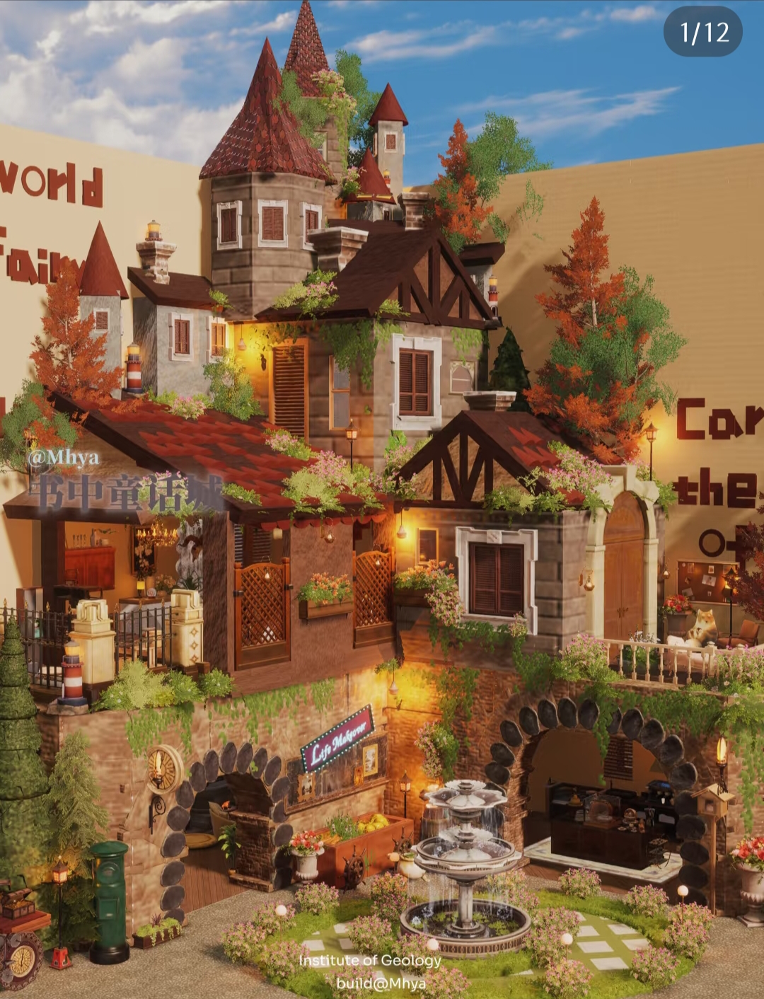

以闪亮之名指南
首页
游戏概况
形象服装
家园玩法
文化评价
四、家园建造与生活模拟 & 五、多元玩法系统
家园建造与生活模拟
家园系统是游戏“虚拟生活空间”理念的核心载体：

自由搭建逻辑
：支持“非网格摆放”“家具重叠”“高度自定义”，玩家可从0到1打造专属空间（如图2的清新家园，绿植与建筑的融合体现“无规则搭建”的自由度）；
主题化场景创作
：从现代树屋（图4）到童话城堡（图6），风格不受限，甚至可复刻霍格沃茨等知名建筑；
拟真生活互动
：家具均可交互，角色会因烹饪、运动产生“饥饿”“疲惫”等真实状态，增强沉浸感。
 
多元玩法系统
除核心的换装和家园系统，游戏还提供丰富玩法，满足不同需求：
主线剧情
：融合悬疑、探案元素，玩家通过换装模拟他人心灵推进故事，剧情评价褒贬不一；
玩呐模式
：无需消耗体力，每道关卡有多个任务，考验服装搭配策略；
竞技场（时尚对决）
：获取6星服装的重要途径，通过搭配比拼获得排名和奖励；
羁绊系统
：通过抽卡获得羁绊卡，经进化、占心、升级提升关卡评分；
日常事件簿
：根据事件风格委派羁绊完成任务获取资源，每天最多接取12个。